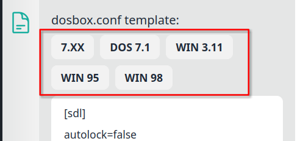
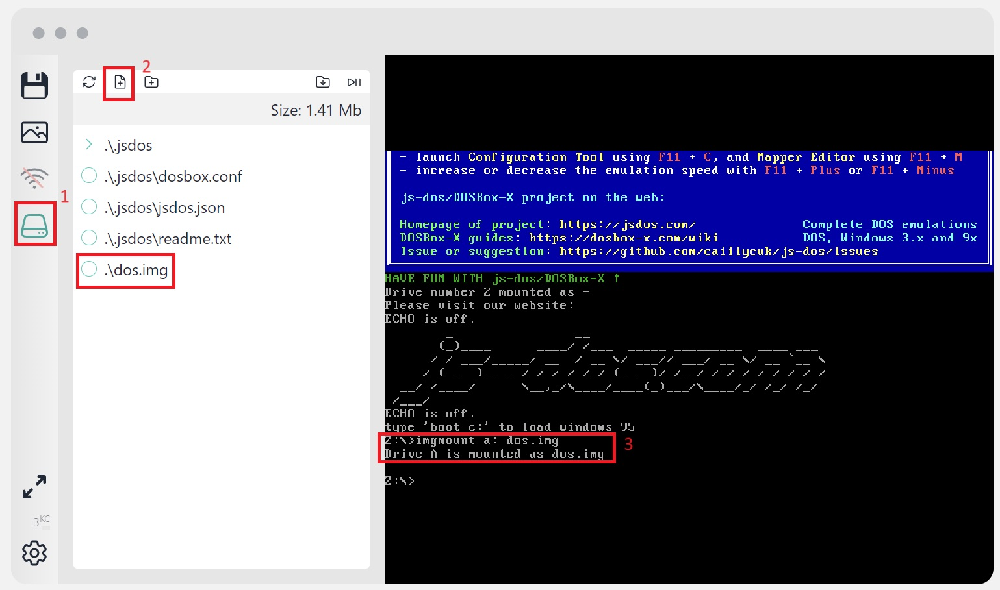
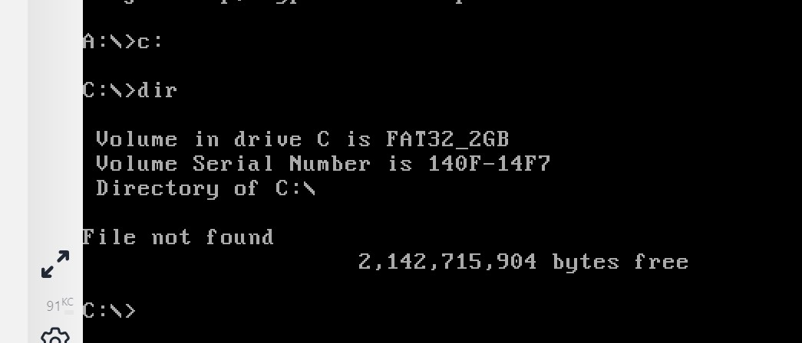
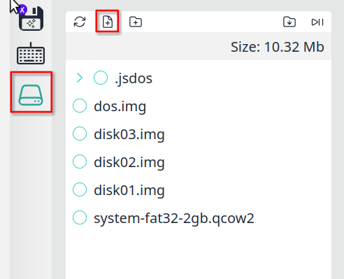
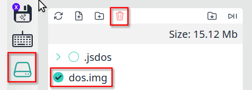
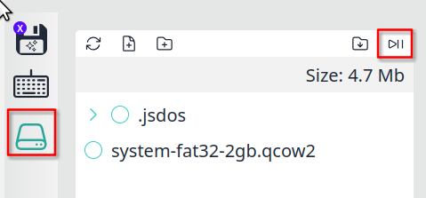
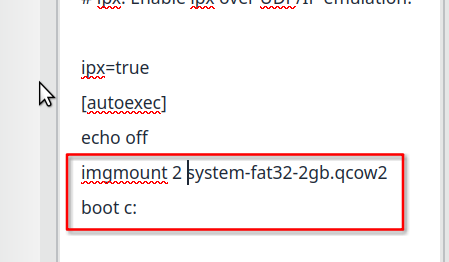
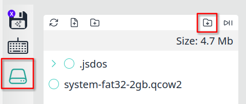

Install OS
The installation process is similar for all operating systems. You can use these instructions not only for MS-DOS/Windows. The installation process includes:
Download an empty disk image
Set up the configuration of DOSBox
Create a js-dos bundle
Get the installation files and a bootable diskette or bootable CD
Upload these images to the file system
Boot from the CD or diskette
Install the operating system
Download the empty disk image
Currently, js-dos provides two disk images:
FAT16 256MB – a good choice for small installations (MS-DOS, Win 3.11)
FAT32 2GB – the best option for Win 9x and installations that require more space
How to boot with empty image
An empty image is just a formatted drive without any data. Because it is empty, you can't boot from it. You need to have a bootable diskette to boot with the empty image.
First, you need to boot with the newly created drive. The easiest way to do this is to download a DOS bootable diskette. You can get one here (dos.img).
Open studio and press Create empty bundle link
Select a configured preset that fits your OS, or provide your own configuration

Start emulation by pressing Play button
Open FS sidebar, press upload file, and select
dos.imgandqcow2empty image.
Type
mount -u c:to unmount drive C:Type
imgmount a: dos.imgto mount the image as drive A:Type
imgmount 2 <name-of-qcow2>.qcow2to mount the qcow2 as drive C:Now boot from A: by typing
boot a:When you have booted, you can change to drive C:. Do what you want: copy files, install OS, etc.

Install MS-DOS
Download the MS-DOS distribution and extract it to a location of your choice. Usually MS-DOS is distributed as a bunch of floppy disks - in our tutorial we used an installation with 3 diskettes. Now add all needed files to the emulator (MS-DOS distribution, qcow2 image and bootable diskette)

Let's mount the emulator file system as drive D: - we need to extract installation files on it to use later.
By doing this, we have extracted the DOS distribution to the virtual file system. Now we can boot with our bootable diskette. Please start DOS with CD-ROM support - in this case, you will have your system drive C: and drive D: will contain your virtual file system.
When you have booted, change to drive D: and run setup using SETUP.EXE
Follow the setup instructions. When the installation is done, you can clean up your bundle using the Trash icon in the FS sidebar.

If you installed the system directly on drive C:, then you can add mount and boot commands to the autoexec section:
Restart emulation from the beginning

Setup autoexec

Run emulation to ensure that everything works fine
At the end, you can export the installed OS as a js-dos bundle.
